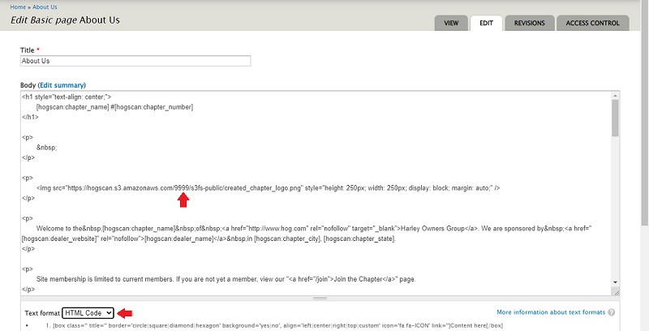

Purpose of this Tutorial
This page will show;
This page will show;
Use tokens to minimize redundant typing and the risk of typos.
The following table shows the token you type in on the page you are editing and the result that is displayed after you Save the page.
Note; the display will show your unique chapter information. Raleigh's info is shown for display purposes only.
Note2; if you want the octothorpe (number, hash, pound sign) to show in front of your chapter number you need to include it right before the token as shown.
It should be noted that any token used in the calender Body will not be translated when viewing the calendar with the HOG[SCAN] smartphone app.
* The tokens for the Chapter Charter, Chapter Handbook and the four release forms are URL links to HOG national. When national updates or revises them they will be picked up on your webpage automatically so you will always have the current version.
By default, the About Us page shows a HOG patch with a generic rocker above it. To have the rocker display your chapter information you will need to edit the page. The following steps will guide you.
img (image) tag. Changing only the 9999 to your four digit chapter number.
For most, it will be a four digit number. There are a few that will use a six digit number. 
https://[hogscan:charter_url] with [hogscan:charter_url]
Replace https://https://[hogscan:handbook_url] with [hogscan:handbook_url]